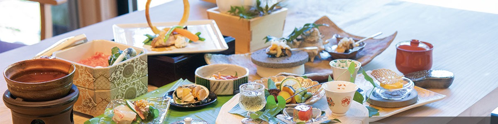

料理Cuisine料理
創作フレンチ和食French–Japanese创作法式和食
九州の山と海から、和とフレンチの一皿へ
From Kyushu's mountains and seas, to one plate of Japanese and French
取自九州的山与海，成和法交融的一皿
和とフレンチを融合した創作料理は、山海の幸に恵まれた九州の厳選された食材を使用。美味しいおもてなしをご提供致します。
※料理の一例です。 Our cuisine unites Japanese and French traditions, drawn from Kyushu's mountain and sea, with carefully selected seasonal ingredients. (Menu example — dishes vary with the season.) 融合和风与法式的创作料理，选用山海富饶九州的精选食材，献上暖心款待。（菜品示例，随季节而变化。）
※料理の一例です。 Our cuisine unites Japanese and French traditions, drawn from Kyushu's mountain and sea, with carefully selected seasonal ingredients. (Menu example — dishes vary with the season.) 融合和风与法式的创作料理，选用山海富饶九州的精选食材，献上暖心款待。（菜品示例，随季节而变化。）
熊本を中心に、季節でかたちを変える献立A menu built on Kumamoto produce, changing shape with the season以熊本食材为主，随季节改变形态的菜单
熊本県産を中心に、山海の幸に恵まれた九州の食材を主に取り扱った「創作フレンチ和食」。季節や時季によって食材はもちろん調理法も変わり、いつご来館頂いても楽しめる料理を御提供致します。 A "creative French-Japanese" course centred on Kumamoto ingredients and the wider bounty of Kyushu — mountain and sea. Both the ingredients and the cooking methods shift with the season, so every visit brings something new. 以熊本县为中心，选用九州山海食材的「创作法式和食」。食材与烹调手法随四季而变，无论何时到访皆能享用不同风味。
追加のお料理Additional dishes加点料理
※事前予約が必要なメニューがございます。当日はご確認下さい。Some items require advance reservation.部分菜品需提前预约。
A5ランク黒毛和牛ステーキA5 Kuroge Wagyu SteakA5 黑毛和牛牛排
当日予約可能Same-day OK当日预约可
- 60g¥4,000
- 120g¥8,000
- 150g¥10,000
- 200g¥13,000
A5ランク黒毛和牛しゃぶしゃぶA5 Wagyu Shabu-shabuA5 黑毛和牛涮涮锅
事前予約が必要Advance reservation需提前预约
- 50g¥3,400
- 100g¥6,600
- 150g¥10,000
- 200g¥13,300
熊本県産 馬刺しKumamoto Basashi (horsemeat sashimi)熊本产 · 马肉刺身
事前予約が必要Advance reservation需提前预约
- 赤身 5貫Lean, 5 pcs赤身 5 件¥3,000
- 盛り合わせ 特セットSpecial assortment拼盘 · 特套¥5,400
- 盛り合わせ 特々セットDeluxe assortment拼盘 · 特特套¥7,300
地鶏 天草大王Amakusa Daio Free-range Chicken地鸡 · 天草大王
事前予約が必要Advance reservation需提前预约
- 地鶏のタタキ 160gTataki, 160g地鸡刺身 160g¥2,000
- 焼物 盛り合わせ 200gGrilled assortment 200g烧物拼盘 200g¥3,000
伊勢海老Ise Lobster伊势龙虾
事前予約が必要Advance reservation需提前预约
- 価格は時季により異なりますSeasonal market price价格随季节而定お問合せAsk us请咨询
お飲み物の持ち込みBring-your-own drinks自带饮品
夕食時Dinner service晚餐时
- 持込料（1点につき）Corkage per bottle开瓶费（每瓶）¥3,300